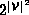
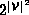

Data Structures and Algorithms
with Object-Oriented Design Patterns in Java
Data Structures and Algorithms
with Object-Oriented Design Patterns in Java
Consider a directed graph  .
Since
.
Since  ,
graph G contains at most
,
graph G contains at most  edges.
There are  possible sets of edges
for a given set of vertices
edges.
There are  possible sets of edges
for a given set of vertices  .
Therefore,
the main concern when designing a graph representation scheme
is to find a suitable way to represent the set of edges.
.
Therefore,
the main concern when designing a graph representation scheme
is to find a suitable way to represent the set of edges.
 Copyright © 1998 by Bruno R. Preiss, P.Eng. All rights reserved.
Copyright © 1998 by Bruno R. Preiss, P.Eng. All rights reserved.